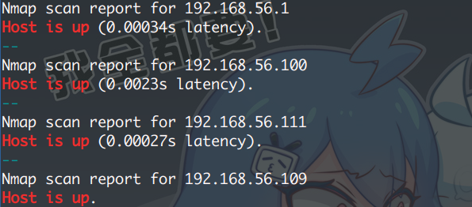

Vulnhub靶机——Me and My Girlfirend1
2020-02-10-22
1 | Description: This VM tells us that there are a couple of lovers namely Alice and Bob, where the couple was originally very romantic, but since Alice worked at a private company, "Ceban Corp", something has changed from Alice's attitude towards Bob like something is "hidden", And Bob asks for your help to get what Alice is hiding and get full access to the company! |
1 | Kali：192.168.56.109 |
信息收集
显示主机存活扫描：
1 | $ nmap -n -sn -T5 -v 192.168.56.1/24 | grep -B 1 "Host is up" |

排除本机与网关后，找出目标机，扫服务/端口：
1 | PORT STATE SERVICE VERSION |
访问 80 端口的 Web页面。显示只有 local 地址才能访问，看源代码，作者给出提示：
1 | <!-- Maybe you can search how to use x-forwarded-for --> |
x-forwarded-for ：用来识别通过 HTTP代理或负载均衡方式连接到 Web服务器的客户端最原始的IP地址的HTTP请求头字段（就是服务器用来识别客户端原始 IP 地址的）
改请求头，添加字段：x-forwarded-for：localhost ，返回页面信息（建议使用 Burp）


NOTE ： 这里犯了一个错误，在查 x-forwarded-for 的时候，偶然看到了 Postman 也就是上图中的软件，下载、使用、测试浪费了许多时间，且最后越来越麻烦（提交表格、登录），最后便放弃了
不是说上图的软件不好用或难用，而是对其一点都不熟悉，不懂套路；Burp 使用不熟练
在 Burp 上有更方便的操作方式，后来改之
通过改 x-forwarded-for 值，达到了欺骗服务器并返回数据，页面源代码并无有价值信息
既然是 Web 那便开始扫目录：
1 | $ dirsearch.py -u http://192.168.56.111 -e php --random-agents -t 32 |
1 | $ dirb http://192.168.56.111 |
1 | $ nikto -h http://192.168.56.111 |


得到地址：
1 | http://192.168.56.111/config/ |
经访问，下面两个地址返回 200 OK 但却空白，一般是后续填充内容使用：
1 | http://192.168.56.111/config/config.php # 200 OK 返回空白 |
robot.txt 只有一个限制地址，访问并无又有用价值
1 | /heyhoo.txt |
最后的几个地址，需要通过修改 x-forwarded-for 值才能访问：
1 | http://192.168.56.111/index.php/login/?page=index # Index |

注册后跳转登录，有三个选项， Dahboard 与 Logout 无甚作用，Profile 会显示你的账号信息
看源代码，除密码为明文，无其他有价值信息。
其实，跳转到 Profile 页的时候，就已经注意到 URL 了：
1 | http://192.168.56.111/misc/process.php?page=profile&user_id=14 |
sqlmap 并没有跑出什么，到时在改变数字的时候，底下会出现其他用户的信息
从一开始，挨个访问，到 5 的时候，出现了用户名为：alice 的用户，也就是 GirlFriend
1 | Name: Alice Geulis |


登录 SSH 成功，访问目录得到隐藏文件和 FLAG1。然后就可以提权了
1 | Flag 1 : gfriEND{2f5f21b2af1b8c3e227bcf35544f8f09} |

提权
执行 sudo -l ，发现了可以使用 php ，执行以下命令，直接提权：
1 | CMD="/bin/sh" |
得到 FLAG2
1 | Thanks! Flag 2: gfriEND{56fbeef560930e77ff984b644fde66e7} |


- 本文链接：https://mr-potatoz.github.io/2020/03/03/Me-and-My-Girlfirend1/
- 版权声明：欢迎转载、引用，但请标明作者和原文地址，谢谢。 :D